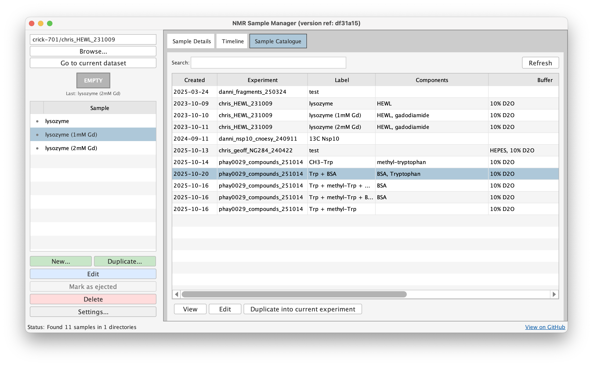
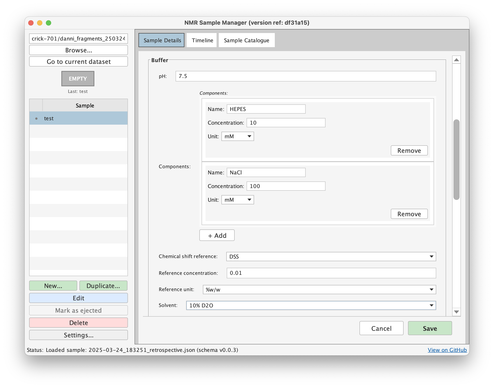
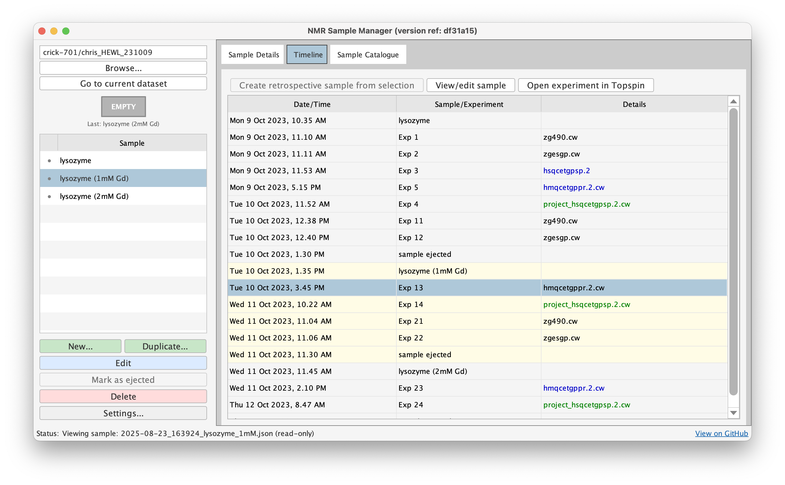

Quick Start Guide
This guide walks through creating and managing your first sample in about 5 minutes.
Basic Workflow
The typical workflow follows your physical NMR process: load sample → create metadata (ijacommand or "New" button) → run experiments → eject sample (eja command or "Mark as Ejected" button).
Your First Sample
Open Sample Manager
In TopSpin, navigate to any dataset and type samples. The window opens and automatically navigates to the current dataset's directory.

Create a New Sample
Click "New..." to create a sample entry. The form has several sections for Users, Sample, Buffer, NMR Tube, Laboratory Reference, and Notes. All fields are optional - enter what's relevant.

Let's create a simple protein NMR sample. Add your name under Users, then under Sample set the Label to MyProtein_pH7. Add a component with Name MyProtein, select 15N for isotopic labelling, set Concentration to 500 with Unit uM. Under Buffer, set pH to 7.4, Solvent to 10% D2O, and Chemical shift reference to DSS. Add a buffer component with Name Tris-HCl, Concentration 50, Unit mM. Under NMR Tube, select Diameter 5 mm, Type shigemi, and Sample Volume 350 μL.
Click "Save" to write the sample as a JSON file with a filename like 2025-10-23_143022_MyProtein_pH7.json. The timestamp marks when the sample was created (injection time).
Work Normally in TopSpin
Now run your experiments in TopSpin as usual. Sample Manager doesn't interfere with your workflow.
View the Timeline
Click the "Timeline" tab to see samples and experiments chronologically. The timeline shows your sample creation event, all experiments run in this directory, and color coding by experiment type (1D/2D/3D+). Double-click any experiment to open it in TopSpin.

Eject the Sample
When you remove the sample from the spectrometer, select it in the sample list and click "Mark as Ejected". This adds an ejection timestamp to the metadata. Alternatively, type eja in TopSpin.
Using Commands
Instead of GUI buttons, you can use TopSpin commands:
ija (inject and annotate) - When loading a new sample, this opens Sample Manager, creates a new sample form, navigates to your current directory, and auto-ejects any previous active sample. Fill in the form and save.
eja (eject and annotate) - When removing a sample, this marks the currently active sample as ejected by adding an ejection timestamp.
Sample Manager enforces one active sample per directory at a time, matching physical reality. Creating a new sample automatically ejects the previous one.
Editing and Duplicating
To edit an existing sample, select it and click "Edit" (or double-click). Modify fields and click "Save". The modified_timestamp updates automatically. Samples display in read-only mode initially - double-click or click "Edit" to enable editing.
For similar samples, use the duplicate feature. Select an existing sample, click "Duplicate...", modify the relevant fields, and save. This copies all metadata from the template, letting you change just what's different.
Common Questions
Where are files stored? Sample metadata files live in your NMR data directories alongside experiments:
Can I edit JSON manually? Yes, but be careful with syntax. The GUI is recommended for most users.
What if I delete a JSON file? The sample metadata is lost, but experiment data is unaffected. Sample Manager only reads/writes JSON files.
Can multiple people use the same metadata? Yes. JSON files can be shared over network file systems, committed to git, or copied between systems.
Next Steps
Explore the full usage guide for all features, read understanding the schema to learn what each field means, or check out tips and tricks for power user features.
Questions? Contact us or open an issue.